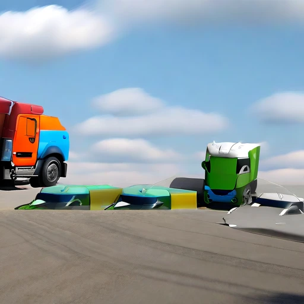

When a model learns to answer
When a unified model improves at answering visual questions, what changes in the images it generates? The audit compares both abilities across six models. It holds the generation prompt and noise fixed so that changes can be attributed to the update being tested.
The two outputs use the same request. The second borrows only the learned conditioning change from a request with a different count.

What the audit measures
-
Image-grounded answers
Compare answers on intact, blank and permuted inputs to test whether gains depend on visual evidence.
-
Changes in generation
Train a removable low-rank update on visual question answering, then switch it on and off with identical prompts and noise.
-
Attribute transfer
Swap in a norm-matched update from a different prompt. Score the image against both the original and donor attributes.
Compare six backbones
With BLIP3-o, activating the update improved counting answers by 4.98 percentage points while the counting image score fell by 0.89 points on a 100× scale. The explorer shows how these changes varied across models and tasks.
Explore the implementation
Read the adapter, source controls and conditioning swaps, or score the example outputs yourself. The scoring demo saves drafts in this browser and exports your observations as CSV.